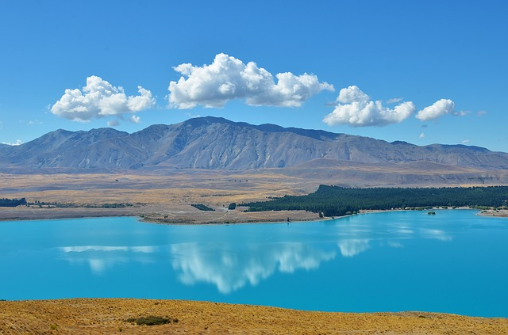

Lake Tekapo
Der Lake Tekapo ist ein ehemaliger Gletschersee und nach seiner Aufstauung mit rund 95 km2 der größte See der Region Canterbury auf der Südinsel von Neuseeland.
Der See wird vornehmlich durch das Schmelzwasser der Gletscher Classen Glacier, Grey Glacier, Maud Glacier und Godley Glacier gespeist, was dem See im Zusammenhang mit dem feingeschliffenen Felsuntergrund eine türkisartige Farbe verleiht. Am Südufer des Sees, in direkter Nähe zum Abfluss, befindet sich der kleine Ort Lake Tekapo, der den Namen des Sees trägt. In dem Ort befinden sich einige touristische Einrichtungen, die ihn zusammen mit dem See zunehmend als Tourismusziel attraktiv machen.
Da die Region zwischen dem Lake Tekapo und dem Lake Pukaki kaum besiedelt ist und für ihren sehr dunklen, ohne Einflüsse künstlicher Beleuchtung versehenen Nachthimmel bekannt ist, entschied sich 1963 die University of Pennsylvania in Zusammenarbeit mit der University of Canterbury
auf dem dem See naheliegenden Mount John ein astronomisches Observatorium zu errichten,
das 1982 von der University of Canterbury als Mt John University Observatory weiter geführt wurde. Quelle: (Wikipedia)
Mt John University Observatory

Das Mt John University Observatory (MJUO) ist Neuseelands führendes Observatorium. Es wurde 1965 eingerichtet und befindet sich auf dem Mount John, 1029 Meter über N.N. im nördlichen Teil des Mackenzie-Beckens auf der Südinsel von Neuseeland. Die Betreiberin des Observatoriums ist die University of Canterbury in Christchurch.
Auf dem Gelände des Observatoriums befinden sich mehrere Teleskope, darunter das HERCULES („High Efficiency and Resolution Canterbury University Large Echelle Spectrograph“) und das MOA Telescope mit einem Durchmesser vom 1,8 Metern. Das MOA Telescope ist das größte Teleskop in Neuseeland. Daneben befinden sich ein Café und Unterkünfte für Forscher auf dem Gelände. Im Juni 2012 wurde von der International Dark Sky Association ein Gebiet von 430.000 Hektar um das Observatorium herum zum Lichtschutzgebiet, dem Aoraki Mackenzie International Dark Sky Reserve, erklärt. Führungen zum Observatorium sind vom Ort Lake Tekapo aus möglich. Quelle: (Wikipedia)